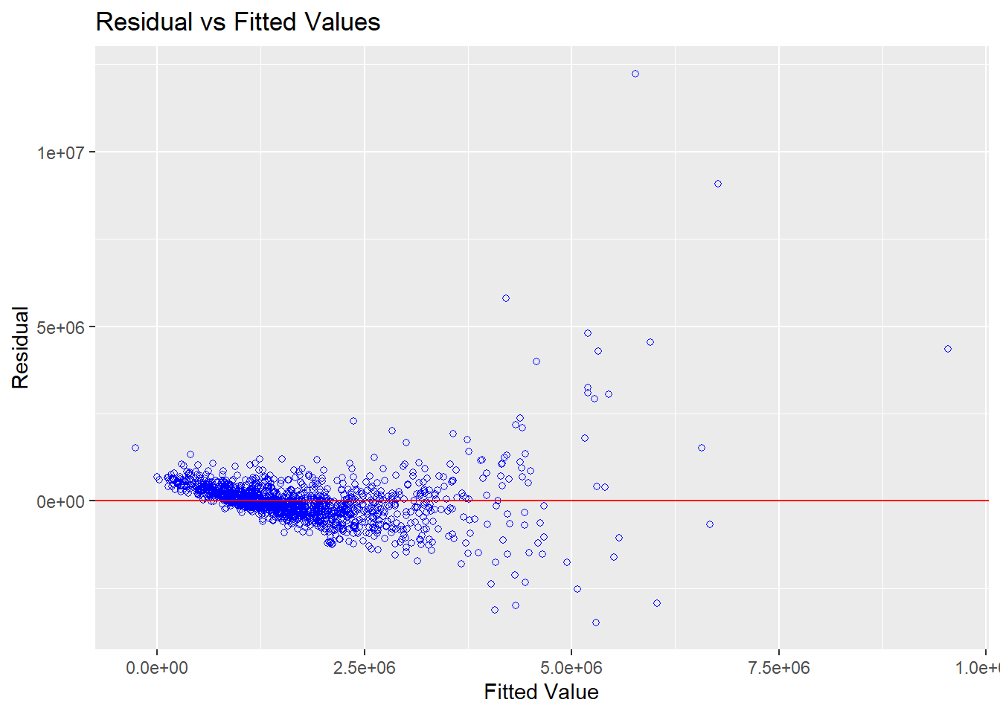

pacman::p_load(olsrr, corrplot, ggpubr, sf, spdep, GWmodel, tmap, tidyverse, gtsummary, dplyr, sfdep)In class Exercise 07
condo_resale <- read_csv("data/aspatial/Condo_resale_2015.csv")glimpse(condo_resale)Rows: 1,436
Columns: 23
$ LATITUDE <dbl> 1.287145, 1.328698, 1.313727, 1.308563, 1.321437,…
$ LONGITUDE <dbl> 103.7802, 103.8123, 103.7971, 103.8247, 103.9505,…
$ POSTCODE <dbl> 118635, 288420, 267833, 258380, 467169, 466472, 3…
$ SELLING_PRICE <dbl> 3000000, 3880000, 3325000, 4250000, 1400000, 1320…
$ AREA_SQM <dbl> 309, 290, 248, 127, 145, 139, 218, 141, 165, 168,…
$ AGE <dbl> 30, 32, 33, 7, 28, 22, 24, 24, 27, 31, 17, 22, 6,…
$ PROX_CBD <dbl> 7.941259, 6.609797, 6.898000, 4.038861, 11.783402…
$ PROX_CHILDCARE <dbl> 0.16597932, 0.28027246, 0.42922669, 0.39473543, 0…
$ PROX_ELDERLYCARE <dbl> 2.5198118, 1.9333338, 0.5021395, 1.9910316, 1.121…
$ PROX_URA_GROWTH_AREA <dbl> 6.618741, 7.505109, 6.463887, 4.906512, 6.410632,…
$ PROX_HAWKER_MARKET <dbl> 1.76542207, 0.54507614, 0.37789301, 1.68259969, 0…
$ PROX_KINDERGARTEN <dbl> 0.05835552, 0.61592412, 0.14120309, 0.38200076, 0…
$ PROX_MRT <dbl> 0.5607188, 0.6584461, 0.3053433, 0.6910183, 0.528…
$ PROX_PARK <dbl> 1.1710446, 0.1992269, 0.2779886, 0.9832843, 0.116…
$ PROX_PRIMARY_SCH <dbl> 1.6340256, 0.9747834, 1.4715016, 1.4546324, 0.709…
$ PROX_TOP_PRIMARY_SCH <dbl> 3.3273195, 0.9747834, 1.4715016, 2.3006394, 0.709…
$ PROX_SHOPPING_MALL <dbl> 2.2102717, 2.9374279, 1.2256850, 0.3525671, 1.307…
$ PROX_SUPERMARKET <dbl> 0.9103958, 0.5900617, 0.4135583, 0.4162219, 0.581…
$ PROX_BUS_STOP <dbl> 0.10336166, 0.28673408, 0.28504777, 0.29872340, 0…
$ NO_Of_UNITS <dbl> 18, 20, 27, 30, 30, 31, 32, 32, 32, 32, 34, 34, 3…
$ FAMILY_FRIENDLY <dbl> 0, 0, 0, 0, 0, 1, 1, 0, 1, 1, 0, 0, 0, 0, 0, 0, 0…
$ FREEHOLD <dbl> 1, 1, 1, 1, 1, 1, 1, 1, 1, 0, 1, 1, 1, 1, 1, 1, 1…
$ LEASEHOLD_99YR <dbl> 0, 0, 0, 0, 0, 0, 0, 0, 0, 0, 0, 0, 0, 0, 0, 0, 0…condo_resale_sf <- st_as_sf(condo_resale,
coords = c("LONGITUDE", "LATITUDE"),
crs=4326) %>%
st_transform(crs=3414)condo_mlr <- lm(formula = SELLING_PRICE ~ AREA_SQM +
AGE + PROX_CBD + PROX_CHILDCARE +
PROX_ELDERLYCARE + PROX_URA_GROWTH_AREA +
PROX_HAWKER_MARKET + PROX_KINDERGARTEN +
PROX_MRT + PROX_PARK + PROX_PRIMARY_SCH +
PROX_TOP_PRIMARY_SCH + PROX_SHOPPING_MALL +
PROX_SUPERMARKET + PROX_BUS_STOP +
NO_Of_UNITS + FAMILY_FRIENDLY +
FREEHOLD,
data=condo_resale_sf)Model Assessment: olsrr method
ols_regress(condo_mlr) Model Summary
-----------------------------------------------------------------------------
R 0.807 RMSE 750799.558
R-Squared 0.652 MSE 571258408962.149
Adj. R-Squared 0.647 Coef. Var 43.160
Pred R-Squared 0.637 AIC 42970.175
MAE 413425.809 SBC 43075.567
-----------------------------------------------------------------------------
RMSE: Root Mean Square Error
MSE: Mean Square Error
MAE: Mean Absolute Error
AIC: Akaike Information Criteria
SBC: Schwarz Bayesian Criteria
ANOVA
--------------------------------------------------------------------------------
Sum of
Squares DF Mean Square F Sig.
--------------------------------------------------------------------------------
Regression 1.515174e+15 18 8.417631e+13 147.352 0.0000
Residual 8.094732e+14 1417 571258408962.149
Total 2.324647e+15 1435
--------------------------------------------------------------------------------
Parameter Estimates
-----------------------------------------------------------------------------------------------------------------
model Beta Std. Error Std. Beta t Sig lower upper
-----------------------------------------------------------------------------------------------------------------
(Intercept) 481728.405 121441.014 3.967 0.000 243504.909 719951.900
AREA_SQM 12708.324 369.590 0.580 34.385 0.000 11983.322 13433.326
AGE -24440.816 2763.164 -0.165 -8.845 0.000 -29861.148 -19020.484
PROX_CBD -78669.779 6768.972 -0.268 -11.622 0.000 -91948.061 -65391.496
PROX_CHILDCARE -351617.910 109467.252 -0.092 -3.212 0.001 -566353.201 -136882.619
PROX_ELDERLYCARE 171029.418 42110.506 0.083 4.061 0.000 88423.783 253635.053
PROX_URA_GROWTH_AREA 38474.534 12523.567 0.059 3.072 0.002 13907.809 63041.258
PROX_HAWKER_MARKET 23746.098 29299.755 0.019 0.810 0.418 -33729.461 81221.657
PROX_KINDERGARTEN 147468.986 82668.868 0.031 1.784 0.075 -14697.534 309635.506
PROX_MRT -314599.679 57947.441 -0.120 -5.429 0.000 -428271.672 -200927.687
PROX_PARK 563280.499 66551.675 0.148 8.464 0.000 432730.102 693830.897
PROX_PRIMARY_SCH 180186.083 65237.948 0.070 2.762 0.006 52212.744 308159.421
PROX_TOP_PRIMARY_SCH 2280.036 20410.435 0.002 0.112 0.911 -37757.880 42317.951
PROX_SHOPPING_MALL -206604.057 42840.595 -0.108 -4.823 0.000 -290641.863 -122566.252
PROX_SUPERMARKET -44991.803 77082.635 -0.012 -0.584 0.560 -196200.149 106216.542
PROX_BUS_STOP 683121.347 138353.278 0.134 4.938 0.000 411722.087 954520.608
NO_Of_UNITS -231.180 89.033 -0.050 -2.597 0.010 -405.830 -56.530
FAMILY_FRIENDLY 140340.770 47020.551 0.055 2.985 0.003 48103.399 232578.141
FREEHOLD 359913.008 49220.224 0.140 7.312 0.000 263360.671 456465.345
-----------------------------------------------------------------------------------------------------------------Multi-collinearity
ols_vif_tol(condo_mlr) Variables Tolerance VIF
1 AREA_SQM 0.8625928 1.159296
2 AGE 0.7026139 1.423257
3 PROX_CBD 0.4605774 2.171188
4 PROX_CHILDCARE 0.2981029 3.354546
5 PROX_ELDERLYCARE 0.5922259 1.688545
6 PROX_URA_GROWTH_AREA 0.6614127 1.511915
7 PROX_HAWKER_MARKET 0.4373889 2.286295
8 PROX_KINDERGARTEN 0.8370845 1.194622
9 PROX_MRT 0.5049530 1.980382
10 PROX_PARK 0.8018396 1.247132
11 PROX_PRIMARY_SCH 0.3855782 2.593508
12 PROX_TOP_PRIMARY_SCH 0.4968645 2.012621
13 PROX_SHOPPING_MALL 0.4906426 2.038144
14 PROX_SUPERMARKET 0.6152063 1.625471
15 PROX_BUS_STOP 0.3320516 3.011580
16 NO_Of_UNITS 0.6731165 1.485627
17 FAMILY_FRIENDLY 0.7202230 1.388459
18 FREEHOLD 0.6729095 1.486084Variable selection
condo_fw_mlr <- ols_step_forward_p(
condo_mlr,
p_val = 0.05,
details = FALSE)Test for Normality Assumption
Test the model directly via $model call from condo fw mlr.
ols_plot_resid_fit(condo_fw_mlr$model) 
mlr_output <- as.data.frame(condo_fw_mlr$model$residuals) %>%
rename(`FW_MLR_RES` = `condo_fw_mlr$model$residuals`)condo_resale_sf <- cbind(condo_resale_sf,
mlr_output$FW_MLR_RES) %>%
rename(`MLR_RES` = `mlr_output.FW_MLR_RES`)tmap_mode("view")
tm_shape(mpsz)+
tmap_options(check.and.fix = TRUE) +
tm_polygons(alpha = 0.4) +
tm_shape(condo_resale_sf) +
tm_dots(col = "MLR_RES",
alpha = 0.6,
style = "quantile")
tmap_mode("plot")condo_resale_sf <- condo_resale_sf %>%
mutate(nb = st_knn(geometry, k=6,
longlat = FALSE),
wt = st_weights(nb,
style = "W"),
.before = 1)set.seed(1234)
global_moran_perm(condo_resale_sf$MLR_RES,
condo_resale_sf$nb,
condo_resale_sf$wt,
alternative = "two.sided",
nsim=99)The Global Moran’s I test for residual spatial autocorrelation shows that it’s p-value is less than 0.00000000000000000000022 which is less than the alpha value of 0.05. Hence we will reject the null hypothesis that the residuals are randomly distributed.
Since the Observed Global moran I = 0.25586 which is greater than 0, we can infer that the residuals resemble cluster distribution.
bw_fixed <- bw.gwr(formula = SELLING_PRICE ~ AREA_SQM +
AGE + PROX_CBD + PROX_CHILDCARE +
PROX_ELDERLYCARE + PROX_URA_GROWTH_AREA +
PROX_HAWKER_MARKET + PROX_KINDERGARTEN +
PROX_MRT + PROX_PARK + PROX_PRIMARY_SCH +
PROX_TOP_PRIMARY_SCH + PROX_SHOPPING_MALL +
PROX_SUPERMARKET + PROX_BUS_STOP +
NO_Of_UNITS + FAMILY_FRIENDLY +
FREEHOLD,
data=condo_resale.sf,
bw=bw_fixed,
kernel = 'gaussian',
longlat = FALSE) gwr_fixed <- gwr.basic(formula = SELLING_PRICE ~ AREA_SQM +
AGE + PROX_CBD + PROX_CHILDCARE +
PROX_ELDERLYCARE + PROX_URA_GROWTH_AREA +
PROX_HAWKER_MARKET + PROX_KINDERGARTEN +
PROX_MRT + PROX_PARK + PROX_PRIMARY_SCH +
PROX_TOP_PRIMARY_SCH + PROX_SHOPPING_MALL +
PROX_SUPERMARKET + PROX_BUS_STOP +
NO_Of_UNITS + FAMILY_FRIENDLY +
FREEHOLD,
data=condo_resale.sf,
bw=bw_fixed,
kernel = 'gaussian',
longlat = FALSE)Take-home EX! Take note of this to tidy up dataset.x
gwr_adaptive_output <- as.data.frame(
gwr_adaptive$SDF) %>%
select(-c(2:15))